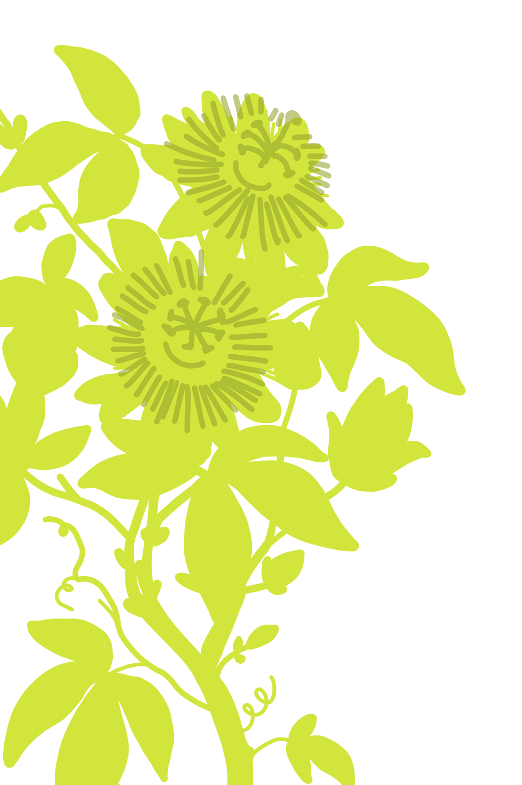
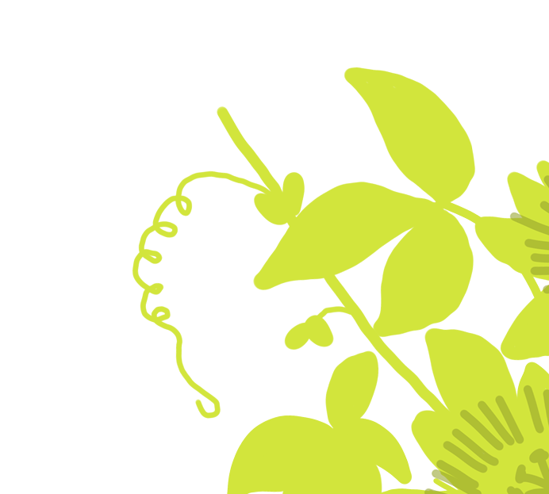

klostergärten schweiz
Hier entsteht ein neues Projekt.
Klostergärten Schweiz dokumentiert, erforscht und vermittelt die Klostergärten der Schweiz als lebendige Archive von Wissen, Pflanzen-, Sozialkultur, Ernährung und Spiritualität. In einem historischen Zeitfenster sichern wir gefährdetes Erfahrungswissen, vernetzen Menschen und Institutionen und machen dieses kulturelle Erbe für kommende Generationen zugänglich.
unsere vision
Klostergärten gehören zu den ältesten Kulturräumen der Schweiz.
Über Jahrhunderte wurden hier Heilpflanzen kultiviert, Nahrung produziert, Wissen bewahrt und Erfahrungen weitergegeben. Heute befindet sich dieses kulturelle Erbe in einem tiefgreifenden Wandel. Einige Klostergärten sind bereits verschwunden, andere müssen sich an veränderte klimatische und gesellschaftliche Bedingungen anpassen.
Mit dem Projekt Klostergärten Schweiz entsteht ein lebendiges Inventar und Kulturportal, das Forschung, Vermittlung, Vernetzung und gesellschaftliches Engagement zusammenführt.
Das Projekt dokumentiert Klostergärten, ihre Geschichte und ihre gegenwärtige Entwicklung. Zugleich schafft es einen Ort der Begegnung für Menschen, die sich für Gartenkultur, Biodiversität, Kulinarik, Heilpflanzen, Spiritualität und klösterliche Wissensgeschichte interessieren. So werden bestehende Initiativen sichtbar gemacht, neue Kooperationen angeregt und Impulse für den Erhalt und die Weiterentwicklung dieses einzigartigen Kulturerbes gegeben.